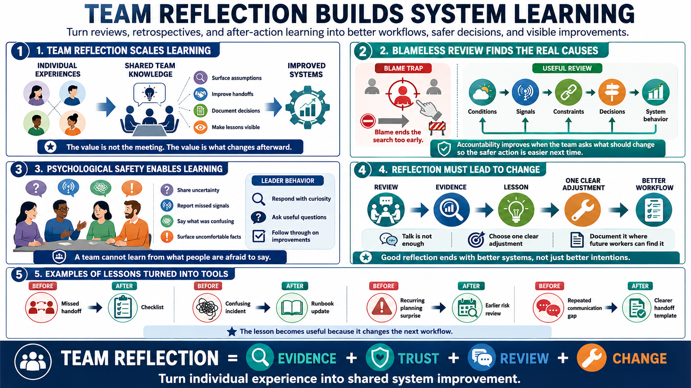

Reflection in Teams
Connecting to LMS... Progress: in progress

Narration
Team reflection turns individual learning into system learning. Retrospectives, after-action reviews, project reviews, and design reviews help teams surface assumptions, improve handoffs, document decisions, and make lessons visible. The value is not the meeting itself. The value is whether the team changes the way work is planned, executed, communicated, or supported.
Blameless review at a practical level means focusing on conditions, decisions, signals, constraints, and system behavior rather than treating one person as the whole explanation. This does not remove accountability. It makes accountability more useful by asking what the team can change so the safer or better action is easier next time. Blame often ends the search too early.
Psychological safety matters because people need enough trust to share uncertainty, missed signals, confusion, and uncomfortable facts. A team cannot learn from what people are afraid to say. Leaders and peers shape that environment by responding to bad news with curiosity, asking useful questions, and following through on improvements rather than turning reflection into theater.
Team reflection should avoid talk without change. Every review does not need a long list of action items, but it should produce at least one clear adjustment when the evidence calls for it. Lessons should be documented where future workers can find them. A good team reflection ends with better systems, not just better intentions. For example, a team might turn a missed handoff into a checklist, a confusing incident into a runbook update, or a recurring planning surprise into an earlier risk review. The lesson becomes useful because it changes the next workflow.